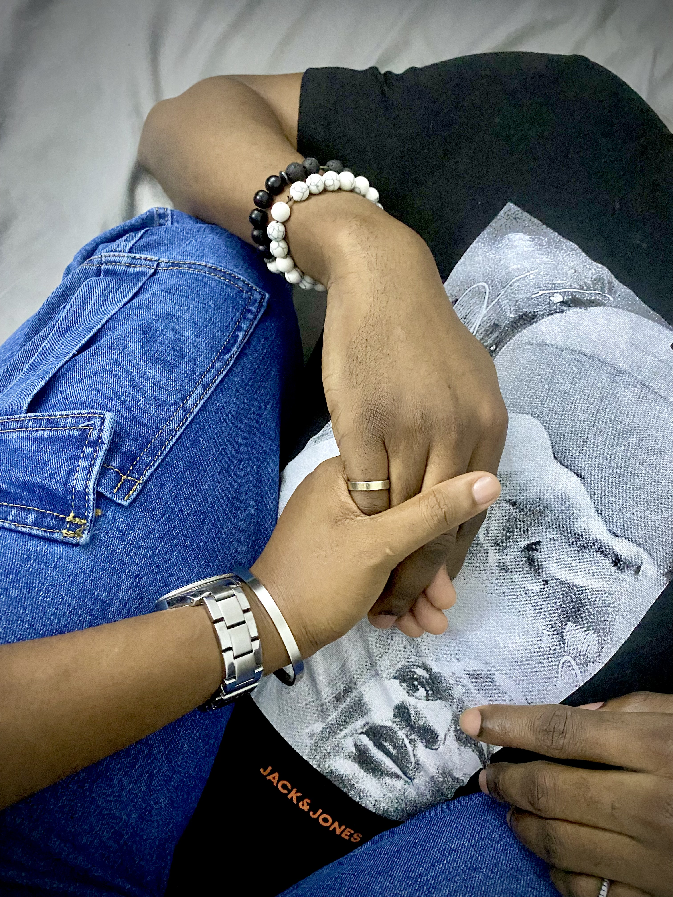
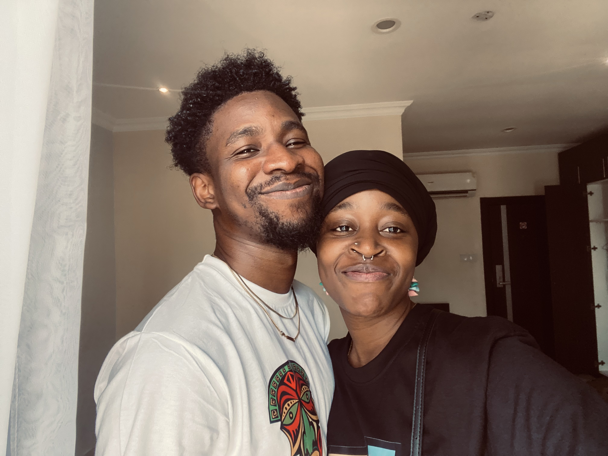
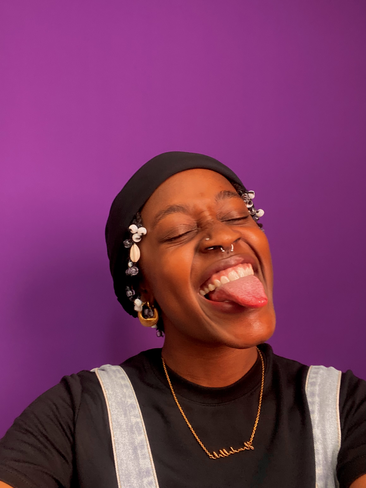
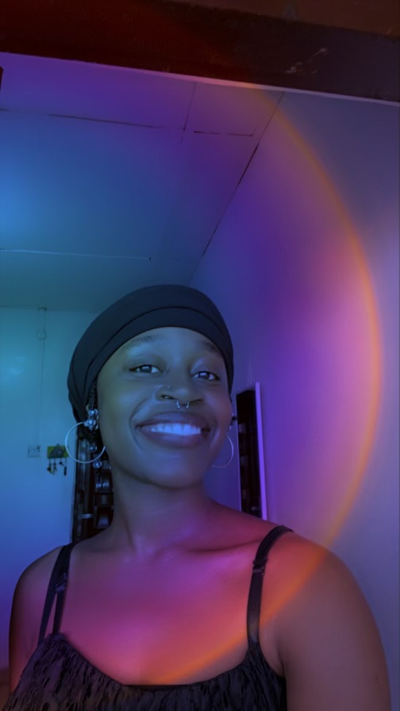
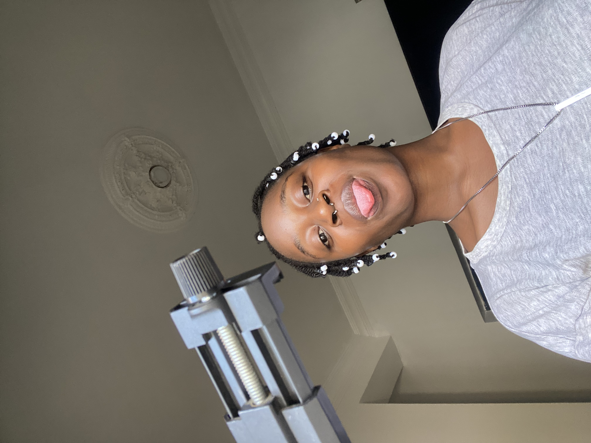

This isn't everything. Just some of the many moments we had.
A few dates, a few photos, and the feelings between them.
Our first date. I remember the butterflies, that first kiss, the dance without a care, the ride home.
Even then, I knew we had something special.
You came to me. Impromptu AF.
We did the museum, restaurants, walked around like we had more time than we did. I took too many photos and you let me.
We grew closer. More us.
A million texts
2 lifetimes worth of calls
Air kisses
Virtual huggies
We felt right.
You cried, I cried.
We were so bad at staying apart.
It was hard.
Miles apart, but we never did go completely silent. Random photos, check-in texts.
And even when you built the wall, there was still a thread of connection. However thin.
Boy was it hard.
You: "Proof of life?"
Me: "Still here."
The walls came down!
We both remembered.
We fell in love again (we never really fell out of it).
From you:
"Hi Mister Akanni! Congratulations on getting a freebie! We love to have you back!"
"Once you claim your coupon using this code - Yellow, kindly give your initial reason for considering leaving us via this form. We take your feedback seriously and we would never want to risk letting you down in the future."
My reply:
"Dear Team Koya, I would like to express my sincere gratitude for your prompt and courteous response to my previous concerns. I have decided to withdraw all prior complaints without further action."
"As a token of my appreciation, I intend to listen to the song 'Yellow' repeatedly throughout the evening as a way of redeeming my coupon."
"I eagerly anticipate the development of a stronger partnership with you."
"With Love, Dami"
Your response:
"Team Koya is delighted to keep this line of communication open—it truly warms our hearts."
"As a token of our appreciation, we're offering you a lifetime supply of Eskimo kisses, redeemable at your discretion (terms and conditions: just keep working with us!)."
"We look forward to our next conversation."
"With all our best, Team Koya ❤️"
"Our conversation yesterday was nice. Fantasizing about a version of us that's together... meeting parents, small intimate wedding. It was really nice."
"I've been turning a lot of things over in my mind lately—things about us, about everything we've been through, and everything that could still be ahead."
"What we have... it's rare. You know it. I know it. We don't even need to say it out loud—we feel it. It's in the ease, the banter, the long calls that stretch into sleep, the way we just get each other without trying too hard. I'm fully myself with you. No edits. No performance. Just me. And I haven't felt that with anyone else—not like this."
"But I'd be lying if I said I wasn't scared. I've been scared. What we have? It terrifies me."
"Because the last time we fell apart, it ruined me. And even though I keep saying this, I don't think you get how much. It was bad."
"And the thought of feeling that vulnerable again—it scared me. Not because I don't believe in us, but because I do. And losing something real... that kind of loss stays with you."
"I also find myself wondering—am I choosing comfort? Familiarity? I know this version of us. It's beautiful. But is it enough? Am I allowed to want more? Someone who's financially stable already, maybe taller (height shade is that you? 👀), maybe more traditionally 'secure'? Or is that just noise—external expectations trying to drown out something real?"
"Because the truth is, even with all those questions, I keep coming back to you. No matter how far I run in my mind, no matter who else I've tried to connect with—it's still you."
"But I do worry about one thing deeply: when life gets hard again—and it will—will you stay soft and open with me, or will you lock up and shut me out? Because I don't want to be the one holding everything together alone. I know you're capable. I just need to know that when push comes to shove, you'll push too."
"That you wouldn't run and leave me hanging..."
"I'd you do visit it's going to mean more than a getaway. It's a test, a dream even... Maybe a reset button?"
"If it feels as right in person as it does now, then everything changes. It becomes tangible. And maybe the fear in my heart won't feel so heavy when I can finally hold your hand again, hear your laugh in my ear, fall asleep with you beside me for real this time. Make new memories..."
"If it works—if we still feel like us—then we start from there. And if it doesn't, if life or visas or timing doesn't align, then maybe we let go with grace? But I'm hoping—quietly, deeply—that we won't have to."
"This feels real. It's always felt real. And that's why I'm scared. But that's also why I'm still here."

The longest time we ever spent together.
Couldn't believe I finally got to hold you again after so long.
This time, we felt steadier. Real.
We learnt loads about each other, we still are.
"If I sent you emails, would you like that?", is what I asked right before I started typing this. You joked a bit and said, "send first." And then, in a calmer, more serious voice, you said, "Yes."
"Like, you knew I needed it... Then you proceeded to tell me you would also appreciate notes... 'It's the thought that matters', you say."
"I feel needy sometimes. In this moment, I think it is the neediness that is making me awkward. Like, we are here, existing in a bubble, but we are on opposite sides of the sphere. I don't think this is necessarily a bad thing. At least not today."
"I just sometimes wonder, if I wonder too much. Would you wonder with me?"
"'Hi baby', you say, breaking me out of my thoughts. You want to take a 30-minute nap. It's a workday today. You don't feel like it."
"I feel different. Spacier. Crazier. Just an observation. I sometimes wonder if this is one of those things that are present because of how much I think about it. I should get out of my head more. The world is nice."
"What kind of emails do you want me to send you? Do you like these little roamings of my mind? Do you want me to be mushy? I can do mushy... I can do mushy right now..."
"Some days, I'm sated, because I feel blessed in my heart. It's such a cheesy thing to say; to feel blessed in ones heart about the existence of another human. Rallie makes me feel this way. You, also make me feel this way."
"I guess it's because I feel understood by someone for the first time ever. I can be my full ridiculous self with you."
"Some days, I wonder if this would be an uno reverse. I think I enjoy sitting in the negative a lot. 'Enjoy,' isn't the word I should use... I don't have a better word right now. But what if this is all we get? What if feelings change? What if someone dies? What if... life just happens..."
"Life has happened a lot to me. So I'm always on edge that it will happen again."
"I don't know, it just feels too good often times."
"All to say... I love you. Even though this sounds sombre. I do... I really like having you in my life Akanni. You make my days a little bit brighter."
"I hope you have a good day. I hope work doesn't turn out as crappy as you envisage."
"Find me when you can."
"the warmest of huggies, Hamda"
This is us Hammy.
Wanted you to know that I was paying attention the whole time.
Every message, every photo, every silence between them.
Can't wait to keep this timeline going for life.
You are my baby, always. ❤️